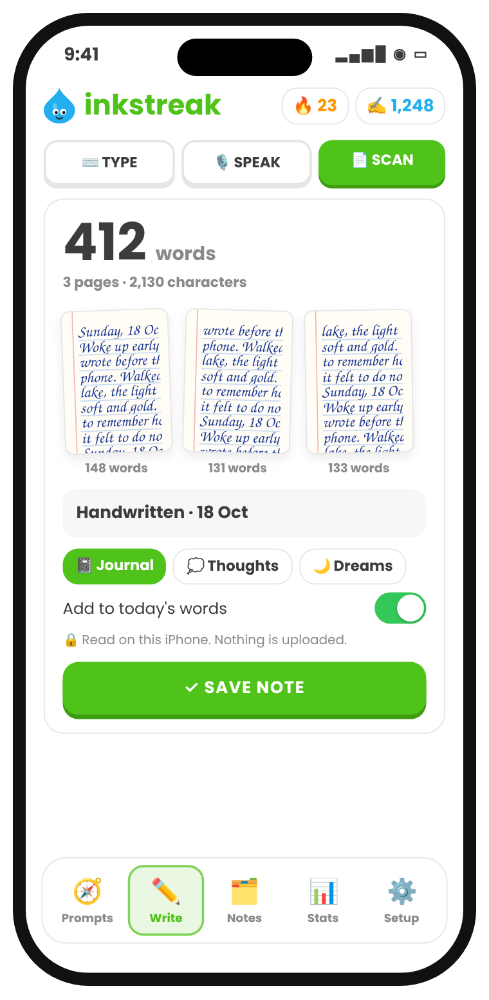

The writing-habit app for iPhone
Keep writing human.
AI can write anything now, so your own words matter more. Inkstreak helps you write a little every day, typed, spoken or by hand, with a streak that counts every word. And it all stays on your iPhone.
Coming to the App StoreSee how it works7 days free, then $7.99/month or $49.99/year. No account. No ads.


Why Inkstreak
Write something only you could write.
Feeds are filling up with words nobody wrote. Your journal, your messy first draft, a note to a friend: that's the human part, and it's worth keeping. Inkstreak is a small step toward preserving it. It makes writing a daily habit, counts every word you write yourself, and keeps it private.
- No account and no servers: your writing stays on your iPhone unless you share or export it
- Never used to train AI
- Paper journals count too: handwriting is read on your iPhone
A habit in three small steps
Habits stick when they're easy to start, easy to do, and you can see them grow.
Easy to start
A prompt of the day, or 228 to choose from. Never stare at a blank page again.
Write your way
Type in the app or in any app, talk on a walk, or write on paper and scan it. It all counts.
See it grow
Words today, your 🔥 streak, and a friend who notices when you skip. Three sentences keep it alive.
Start
Never stare at a blank page
228 journal prompts for curious minds — about your feelings, your body, the people around you, the world, and the big questions. The hardest part of a habit is starting; a good question does that for you.
- A prompt of the day, or tap Surprise me
- 21 themes, from Notice and Memories to Astrology and Human Design
- Save the ones you love
Streak
Watch your habit grow
Words today and your streak, front and centre. No word goals to fail: any writing keeps it alive. Look back at any day or range and see how far you've come.
- Home Screen and Lock Screen widgets
- Streak buddies: invite a friend and keep each other going
- Share your day as a card
New · Paper
Your handwriting counts too
Love your paper journal? Keep it. Scan the pages with your iPhone and Inkstreak counts the words, right on the phone, and adds them to your day. In an age of AI, handwriting is proof you wrote it.
- Scans like a document scanner: finds the page and flattens it
- Keeps the photos and the count, not the text, unless you choose
- Nothing is uploaded, not even to Apple

Write
A calm page, just for you
Full-screen writing with nothing in the way. Every note gets a headline — the prompt you wrote about — and goes into a folder you name.
- Folders like Journal, Thoughts, Dreams — anything
- Tap any note to read or edit it
- Search everything you've written

Everywhere
Every word counts, in every app
Writing a long message or an email is writing too. Switch to the Inkstreak keyboard and those words count toward your habit as well. Smooth typing with autocorrect, like Apple's.
- Counts in WhatsApp, Mail, Notes, Instagram — everywhere
- Never saves or sends what you type
- Password fields always switch to Apple's keyboard

Talk
Talk. It turns into text.
Some days you won't sit down to write. Talk on a walk instead: your voice note becomes text on your iPhone and keeps the streak alive.
- Start in one tap: Lock Screen, Control Center or Action Button
- Or your own Siri phrase, like “Hey Siri, quick note”
- Spoken words count toward your day

Made by one person, shipped fast
Tell me what you need. I'll build it.
Inkstreak is made by an independent developer, not a big company. Found a bug, want a feature or a new theme? Tap Setup › Talk to the maker in the app, or email support@inkstreak.app. I read every message, and fixes often ship within days.
228 prompts for curious minds
Mind, body, people, the world — and yourself. Here are a few:
What thought has been looping in your head this week?
If your intuition could speak in one sentence today, what would it say?
How are you, really? Keep writing past the first answer.
During the next Mercury retrograde, what would you like to slow down and review?
What's your earliest memory?
What makes a life well lived?
Private by design
- No account, no ads, no tracking
- The keyboard counts words — it never saves what you type
- Notes stay on your iPhone; export them anytime
- Voice and handwriting are read on your iPhone
- Only numbers sync, through your own iCloud
One plan. Everything included.
Start with a 7-day free trial.
Prices vary by country (India: ₹999/year or ₹99/month). Cancel anytime in Settings › your name › Subscriptions.
Coming to the App StoreQuestions
What is Inkstreak?
An app that helps you build a daily writing habit. It gives you something to write about (228 journal prompts) and lets you write your way: type in the app or in any app with the Inkstreak keyboard, talk and it becomes text, or write on paper and scan the pages. Every word counts toward your daily streak, so a little writing every day becomes a habit that sticks.
Why does human writing matter now?
Because so much text is now written by AI. Your own words, in a journal, a draft or a message, carry your thinking in a way generated text can't. Writing every day keeps that skill and that voice yours. Inkstreak keeps your writing on your iPhone and never uses it to train AI.
Why count words at all?
Because what gets counted gets done. Seeing today's words and an unbroken streak is a small, honest reward that brings you back tomorrow. There's no word goal you have to hit: any writing on a day keeps the streak alive.
I journal on paper. Is Inkstreak for me?
Yes. Scan your pages with your iPhone and Inkstreak counts the words on the phone itself, then adds them to your day. It keeps the photos and the count, not the text, unless you choose to. Nothing is uploaded.
How does it count the words I type in other apps?
Switch to the Inkstreak keyboard (tap 🌐) and write anywhere: WhatsApp, Mail, Notes, Instagram. It looks like Apple's keyboard and adds up how many words you type. It never saves, reads back or sends your text, and password fields always use Apple's keyboard.
Is my writing private?
Yes. There's no account and no server. Notes and scanned pages stay on your iPhone; only daily word counts sync between your devices through your own iCloud. Voice notes and handwriting are read on your iPhone.
How much does it cost?
Everything starts with a 7-day free trial. After that it's $7.99 a month or $49.99 a year (prices vary by country — for example ₹99 a month or ₹999 a year in India). Cancel anytime in Settings › your name › Subscriptions before the trial ends and you pay nothing.
What happens if I cancel?
The keyboard keeps working as a normal keyboard, but counting pauses. Your notes stay yours — you can still open, copy and export them.
Can I keep a streak with friends?
Yes. Invite friends with a link from the Stats tab. You'll see each other's streak and words today — never your notes. It works through iCloud, so nobody needs an account.
I found a bug or have an idea.
Please tell me! In the app, go to Setup › Talk to the maker, or email support@inkstreak.app. Inkstreak is made by one person, and fixes and ideas often ship within days.

Keep writing human.
7 days free, then $7.99/month or $49.99/year. No account. No ads.
Launching on the App Store very soon. Follow along: get an email when it's out.